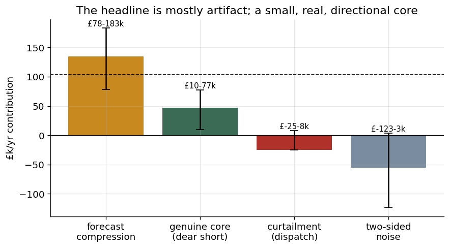
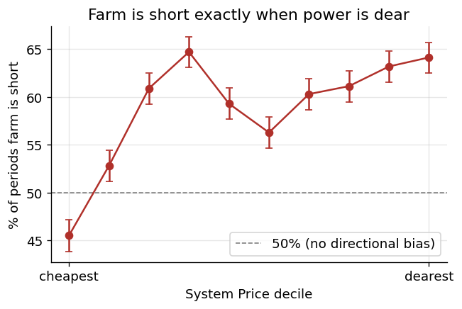
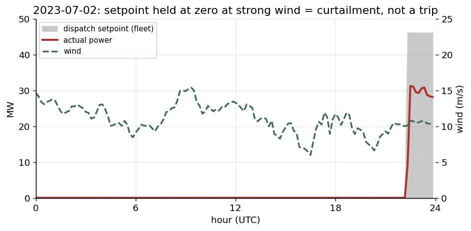
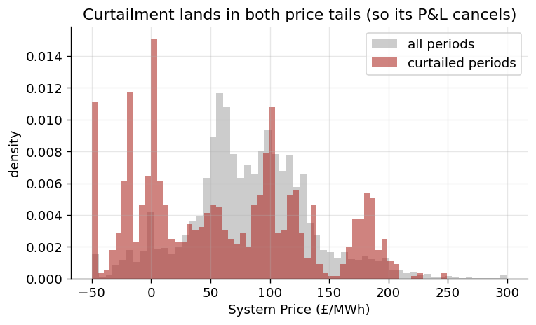
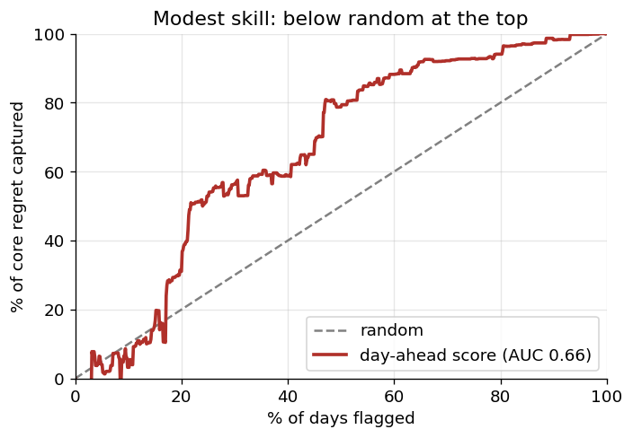
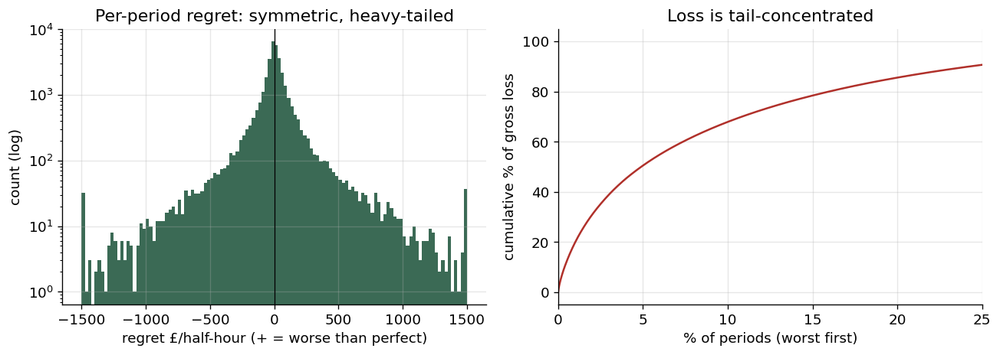

Managing the financial risk of a wind farm's day-ahead bidding strategy on the GB electricity market. The headline imbalance cost looks like one number — decomposed by sign and price regime, most of it is forecast artifact or dispatch fiction, and the genuinely hedgeable part is small. The valuable result is knowing what not to hedge.
Hill of Towie is a 48.3 MW wind farm in Moray, Scotland. It sells electricity a day ahead: by 09:20 each morning it commits a bid for every hour of tomorrow, and any deviation from that bid settles at the half-hourly System Price. The goal here is not to build a better forecast — it is to understand the imbalance cost the current bid is exposed to, and decide what, if anything, is worth doing about it.
The brief's cost is (actual − bid) × SP, which nets to about −£32k/yr
— nearly free. But that mixes the energy value of a deviation with the cost of being
wrong: when the farm over-produces it gets paid for real electricity, which books as profit
and hides the fact that energy was sold below the day-ahead reference. Benchmarking against a
perfect-foresight bid instead isolates the cost of being wrong — regret:
regret = (actual − bid) × (IMRP − SP) = volume_error × price_spread
This factorises into a volume-error leg and a price-spread leg — and all the structure lives in how they interact. Net regret is +£103k/yr. It is the lens the rest of the analysis uses; the brief's cashflow is reported alongside, never replaced.
Every net in this dataset is a thin residual of large opposing flows, so any aggregate misleads until decomposed by sign and price regime. Split it four ways and the story inverts: the biggest component is a forecast artifact, the most dramatic days are dispatch fiction, and the genuinely hedgeable core is small. The decomposition depends on where you draw the thresholds — so move them, and watch what stays true.
| Component | £/yr (regret) | Plausible range | What it really is |
|---|---|---|---|
| Forecast compression | +134,550 | £78k – 183k | forecast under-bids high wind → bidding-layer bias |
| Genuine hedgeable core | +49,040 | £10k – 80k | real directional market risk (short when dear) |
| Curtailment | −25,157 | −25k – +8k | two-sided dispatch fiction — excluded |
| Two-sided noise (plug) | −55,172 | +3k – −123k | residual; least stable number |
96% of net regret sits in the extreme price deciles — it is a tail problem. And
it is directional: in the dearest price decile the farm is short 64% of the time,
cleanly clear of the 50% no-bias line. The same calm weather that starves this one farm starves
GB's whole wind fleet, tightens the national system, and spikes the price — so the farm is short
exactly when buying back is most expensive. The risk lives in
Cov(error, price), not in the size of the error.
The most extreme dear-tail days looked like storms that knocked the farm out. Turbine telemetry says otherwise. The dispatch setpoint — the maximum each turbine is permitted to produce — sits pinned at zero for fifteen straight hours while the wind blows a healthy 12–16 m/s. The farm wasn't broken or becalmed; it was commanded off: grid curtailment behind a constrained Scottish transmission boundary, corroborated by national constraint costs running 2.6× their median on those days.
This is the pivot of the whole analysis. Curtailment is dispatch, not a forecast error — no bid can hedge it. And it hits both price tails: fake losses when commanded off into expensive prices, equal-and-opposite fake gains when commanded off into cheap or negative prices. Its P&L nets to fiction, so it is excluded entirely — never netted, never defended as a number.
Can the genuine core be flagged a day ahead? Using only leakage-safe signals known by gate time — forecast temperature for icing, ECMWF–GFS disagreement, national system tightness — a cumulative gains curve gives AUC ≈ 0.66, and the top decile sits below random. The signals identify a risky class of day, but not which days will carry the loss; the biggest events are forecast busts and sub-3h ramps, invisible day-ahead.
Mitigation is sized on an exact revenue identity —
ΔRev = (bid_new − bid_old)(IMRP − SP) — fit on 2023, evaluated out-of-sample on 2024.
A standing compression de-bias (no forecasting needed) recovers only
~£16k on 2024, CI [−£7k, +£40k]: raising the bid earns +£153k in
cheap periods and gives back −£137k in expensive ones. Conditioning on a day-ahead price signal
made it worse. The flag-shade is marginal.
The same test — split gross from net, split by regime, check concentration — overturned three of my own headline numbers before the decomposition stabilised. That is not flailing; it is one instrument applied at each level, each time revealing structure the aggregate hid. Stated plainly:



commanded off, not a fault.


DATA.md. Turbine SCADA is the Hill of Towie open dataset
(CC-BY-4.0; Clerc & Lingkan, RES, via Zenodo); GB market data from Elexon BMRS and National Grid
ESO; weather from ECMWF, GFS and ERA5. This is an independent study on public data.